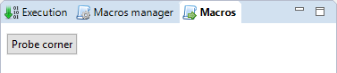
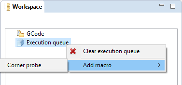

Macro¶
The macro panel allows to define GCode programs that can be easily reused.

Macro parameters¶
Macro are created by defining the following properties :
| Parameter | Description |
|---|---|
| Name | the name of the macro |
| Request confirm before execution | used to request a confirmation before the direct execution |
| Display in macro panel | used to display an button in the macro execution panel |
| Override button color | select and chose a color to override the button border color |
Create a macro¶
- In the Macros Manager panel, click the button. A macro is created with a default name, and is ready for edition,
- Give your macro a friendly name and adjust the parameters,
- Click the button to apply and save your changes.
Edit GCode for a macro¶
The GCode associated with the macro can be changed by clicking the button.
It will open the GCode editor and let you edit GCode just like you would do normally. Saving in the editor also saves the content of your macro.
Note
Make sure to use GCode supported by your target board
Edit a macro¶
In the Macros Manager panel, select the macro to edit in the list and click the button above the list. Fields of the macro will be available for modification.
Delete a macro¶
In the Macros Manager panel, select the macro to delete in the list and click the button below the list.
Warning
This operation can not be undone.
Execute a macro¶
A macro can be executed by using one of the following:

- Click the button in the macro execution panel, if the Display in macro panel is activated.
Warning
Using this method, the execution of the macro will start IMMEDIATELY unless the option is checked on the given macro.
Or

- Add it to the execution queue, using the Execution queue contextual menu. It will be executed just like any other GCode file in the execution queue